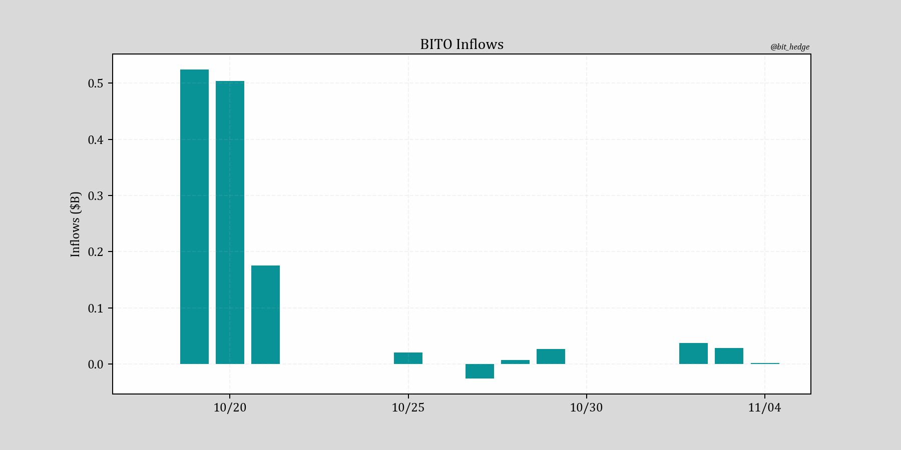
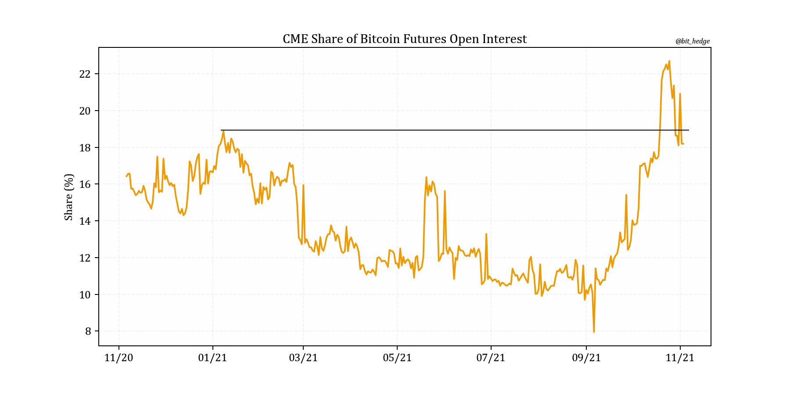
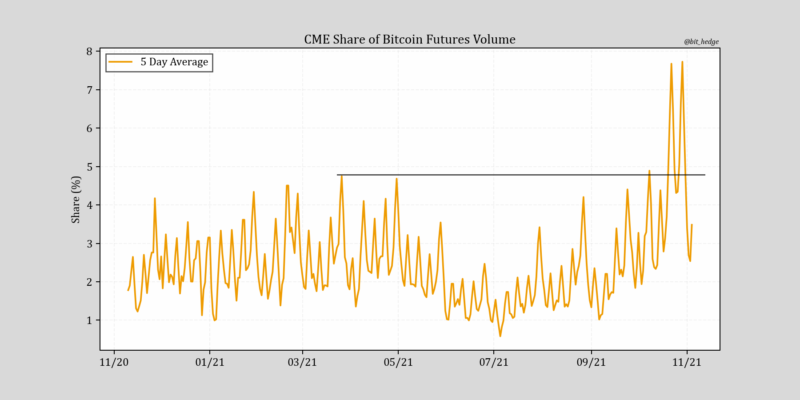
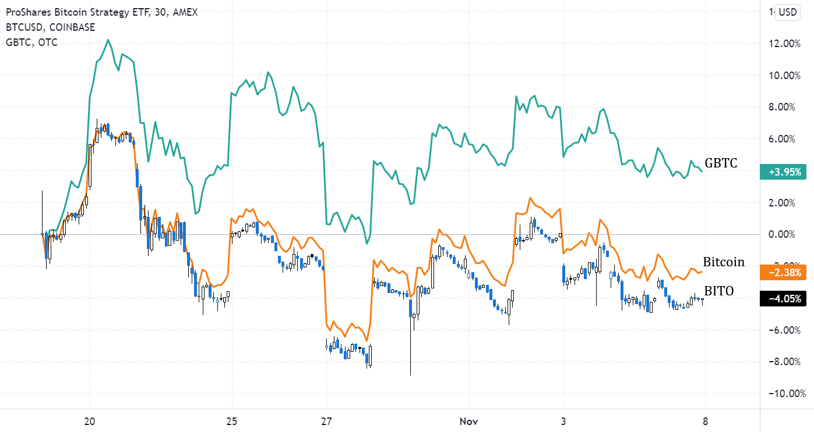

November 5th, 7:20pm nyc time, 2021.
It’s now been just over two weeks since the launch of ProShares’ new Bitcoin futures ETF, and to give credit where credit is due the product kicked off with a spectacular billion dollar inflow in the first two days which some have called the best ever in ETF history.
But it didn’t take long for the excitement to cool with assets under management running into a wall shortly after:
And while some have tried pushing a narrative that CME is now a ‘leading’ venue for Bitcoin, the exchange’s share of total open interest and volume has quickly fallen off to familiar levels (though certainly remains well off the lows).
 Onto the good news though, the mechanism proposed here by which futures purchases can translate to spot purchases has likely helped keep a bid under the market recently. Thanks to the CFTC’s weekly report Commitments of Traders, one can take a look at the unprecedented spike in short positions taken in Bitcoin contracts by Dealers and Leveraged Funds and reasonably assume many of the new additions are offset by equal holdings of ‘physical’ Bitcoin, which may total up to $670 million in spot purchases attributable to the new fund.
An interesting twist in the story however comes in the form of new developments around Barry Silbert’s GBTC, the ‘original’ Bitcoin investment vehicle sporting $40 billion in assets which has recently been shunned by many after an extended period of trading at a discount to NAV. GBTC has outperformed BITO by some 8% since the latter’s launch, which Barry hasn’t been shy about pointing out.
To be fair, the trust still stands at a stubborn 15 percent! discount to its holdings. But while ProShares enjoys a more diversified asset base and is perhaps happy to take their new fees and move on to other things, Grayscale on the other hand most certainly has made a flagship fund out of GBTC, and judging by their CEO’s Twitter feed is much more serious about their market share (one does not have to scroll far to find literally dozens of Tweets attacking BITO).
None of this is to paint Barry and Grayscale in either a bad or failing light, because not only has the 45 year old billionaire been a prominent force for good in the crypto space but under his umbrella company DCG also boasts prime brokerage giant Genesis Trading (crypto’s Goldman?) and leading news outlet Coindesk, making Digital Currency Group nothing short of a powerhouse in ‘new’ finance.
And the company, recently raising money at a $10B valuation from a group of investors including none other than Softbank and Alphabet, has authorized what could be considered the crypto space’s first de facto share buyback in the form of an agreement to purchase $1 billion in GBTC shares.
The conclusion? While starting off with a bang but since moderating, BITO's buried lead is that it's put the heat on the flagship product of what WSJ dubs crypto’s Standard Oil and what happens next is obvious - DCG will do whatever it takes to restore GBTC to NAV, making it at a 15% discount the best option for anyone looking to buy Bitcoin right now.